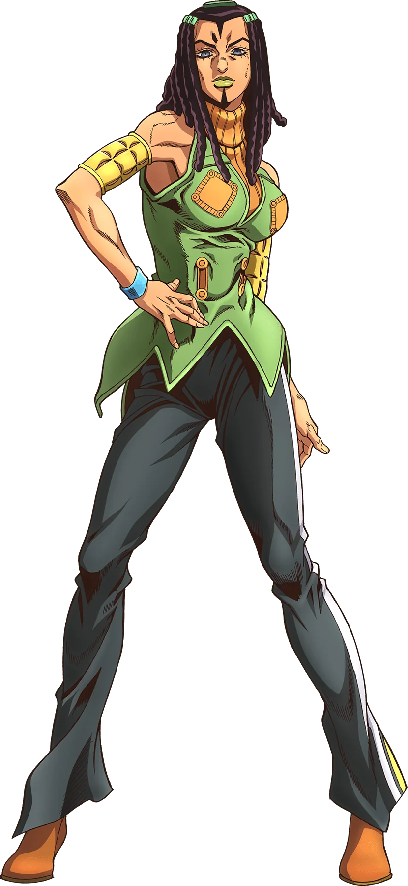

Não foi possível carregar a imagem automaticamente.
Substitua o endereço no atributo src por uma imagem válida de Ermes Costello.
Ermes Costello
Idade: 21 anos
Aniversário: 9 de abril de 1990
Signo do Zodíaco: Áries
Zodíaco Chinês: Cavalo
Ocupação: Prisioneira
Nacionalidade: Mexicana-estadunidense
Altura: 175 cm
Peso: 59 kg
Habilidades
Stand
O Stand de Ermes é a Kiss humanóide, de boa defesa corpo a corpo e ataque, e a habilidade única de duplicar objetos nos quais ela planta um adesivo removível.
História
Ermes é uma mulher presa voluntariamente na Prisão Green Dolphin Street a fim de se vingar do assassino de sua irmã Gloria Costello, Sports Maxx, e logo se alia a Jolyne Cujoh no ambiente hostil que é a prisão. Graças a um certo pingente, Ermes adquire seu próprio Stand, Kiss.